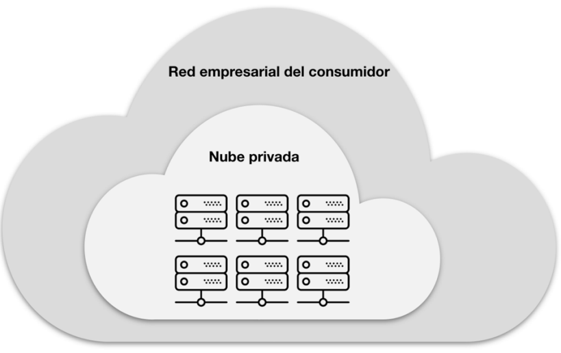
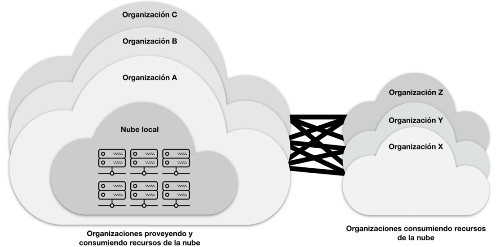
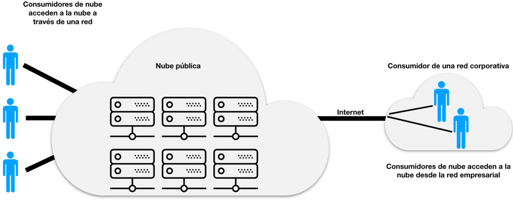
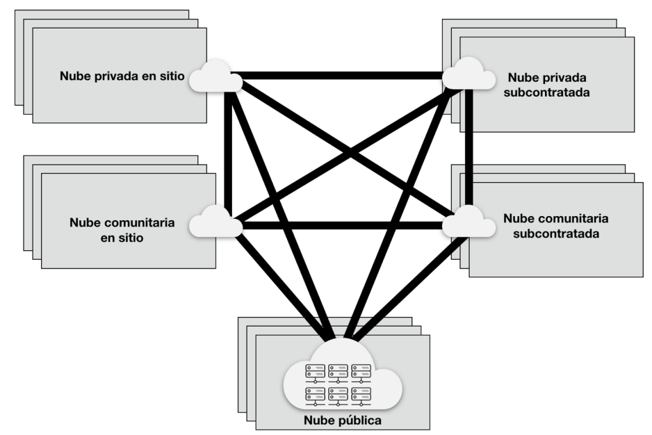

Integrantes
- David Felipe Castro Lopez
- Sergio Andres Arboleda Salinas
Introducción
El Ministerio de Tecnologías de la Información y las Comunicaciones (MinTIC) de Colombia desarrolló esta guía para proporcionar definiciones y criterios que permitan identificar servicios de computación en la nube. Su objetivo es orientar a las entidades públicas y otros actores en la contratación de estos servicios.
Objetivos de la Guía
- Orientar a los interesados para entender el modelo de computación en la nube
- Ofrecer una definición formal alineada con los Acuerdos Marco de TI
- Presentar aspectos a considerar al adquirir servicios en la nube
Alcance
La guía permite que las organizaciones se identifiquen dentro de los actores y modelos de servicios de computación en la nube, proporcionando criterios para la adquisición de estos servicios.
Definición de Computación en la Nube
Según el Instituto Nacional de Estándares y Tecnología (NIST), la computación en la nube es:
"Un modelo que permite el acceso ubicuo, adaptable, y por demanda en red a un conjunto compartido de recursos computacionales configurables (por ejemplo: redes, servidores, almacenamiento, aplicaciones y servicios) que se pueden aprovisionar y liberar rápidamente con un mínimo de esfuerzo de gestión o interacción del proveedor de servicios."
Conceptos Clave
- Nube: Término que hace referencia a Internet
- Acceso ubicuo: Desde diferentes dispositivos, cualquier lugar y momento
- Acceso adaptable: Se adapta a necesidades específicas
- Acceso por demanda: Disponible cuando el cliente lo requiere
- Aprovisionar: Contratar o adquirir recursos computacionales
Características Esenciales
Autoservicio bajo demanda
El consumidor puede aprovisionar capacidades de computación unilateralmente según sea necesario, automáticamente.
Acceso amplio a la red
Los servicios deben ser accesibles a través de la red desde plataformas heterogéneas.
Agrupación de recursos
Los recursos se ponen a disposición de múltiples consumidores, asignados dinámicamente.
Elasticidad rápida
Los recursos pueden crecer o decrecer en cualquier momento para responder a la demanda.
Servicio medible
Los sistemas controlan y optimizan automáticamente el uso de recursos, permitiendo medición y reporte.
Actores en la Computación en la Nube
| Actor | Función |
|---|---|
| Proveedor de nube | Responsable de poner servicios a disposición de los interesados |
| Auditor de nube | Realiza evaluaciones independientes de servicios, operaciones y seguridad |
| Corredor/Agente de nube | Gestiona el uso, rendimiento y prestación de servicios |
| Operador de nube | Proporciona conectividad y transporte de servicios en la nube |
Modelos de Servicio
SaaS (Software como Servicio)
El consumidor utiliza aplicaciones del proveedor que se ejecutan en la infraestructura de nube.
Ejemplos: Correo electrónico, CRM, herramientas de colaboración, ERP
PaaS (Plataforma como Servicio)
El consumidor despliega aplicaciones creadas por sí mismo utilizando herramientas del proveedor.
Ejemplos: Bases de datos, entornos de desarrollo, herramientas de integración
IaaS (Infraestructura como Servicio)
Proporciona capacidades de procesamiento, almacenamiento, redes y otros recursos fundamentales.
Ejemplos: Almacenamiento, cómputo, redes de distribución de contenido
Modelos de Implementación
-
Nube privada: Uso exclusivo por una organización

-
Nube comunitaria: Compartida por organizaciones con intereses comunes

-
Nube pública: Disponible para el público general

-
Nube híbrida: Combinación de dos o más modelos de implementación

Beneficios de la Computación en la Nube
- Reducción de costos de operación y TCO (Total Cost of Ownership)
- Escalabilidad para responder a demandas de capacidad
- Reducción de costos de obsolescencia tecnológica
- Acceso a tecnología de punta
- Rápida recuperación ante desastres y fallos
- Transferencia y reducción de riesgos técnicos
- Entrega rápida y flexible de servicios
- Permite concentrar esfuerzos en la misión de la entidad
Contexto Colombiano
Marco Normativo
La legislación colombiana consagra el principio de neutralidad tecnológica (Ley 1341 de 2009). Las entidades públicas deben evaluar como primera opción la posibilidad de prestar o adquirir servicios tecnológicos haciendo uso de la nube.
Aspectos a Considerar en Colombia
Aprovisionamiento
Debe ser bajo demanda, aunque sujeto a regulaciones de contratación pública.
Migración y Portabilidad
Garantizar la movilidad de datos entre proveedores con cláusulas claras.
Seguridad y Privacidad
Políticas de acceso, clasificación de datos y cumplimiento de normativas.
Acuerdos Marco de TI
Colombia Compra Eficiente, con apoyo del MinTIC, ha establecido Acuerdos Marco para servicios de nube privada y pública, permitiendo a las entidades estatales adquirir estos servicios de manera ágil y transparente.